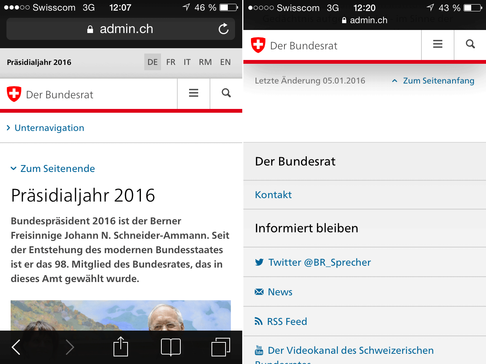

Hierarchical Navigation
2.1.2:
- changed
.active class to .current for current page highlight in the menu
- added
h2.sr-only for more screen reader clarity
- added h2 and label to search field on mobile
2.1.0:
- added the
.nav-mobile section to the beginning of the .list-group element
2.0.0:
- added
<span class="sr-only">current page</span> for current active link
- added
id="main-navigation"for accessibility nav
- added
aria-hidden="true" to close button
The global navigation shows the main points of access to a website as tabs. It is separated from the header above by a red line. The terminology used for the tabs should be chosen carefully, as this is what gives the user the first impression of the purpose of the website.
Behavior:
Clicking on a tab opens a mega flyout with a menu showing the sub-pages.
There are different flyout types: e.g. the teaser and the list flyout. In the teaser flyout, the second navigation level, and in the list flyout the second and third navigation levels can be selected directly. This makes it possible to skip navigation nodes for which there are no contents.
It is also possible to develop and use new flyout types. For instance, a country selection flyout was developed for the EDA.
The flyout can be closed again by clicking on the “close” function at the top right, the tab at the bottom edge, by clicking on the background, or by clicking on the active tab again.
Only on the home page are all the tabs closed. If the user navigates in the area below a tab, this tab remains actively selected.
Add <div class="overlay"></div> at the end of the body tag to display the gray overlay.
<nav class="nav-main yamm navbar" id="main-navigation">
<h2 class="sr-only">Navigation</h2>
<section class="nav-mobile">
<div class="table-row">
<div class="nav-mobile-header">
<div class="table-row">
<span class="nav-mobile-logo">
<img src="../img/swiss.svg" onerror="this.onerror=null; this.src='../img/swiss.png'" alt="Confederatio Helvetica" />
</span>
<h1><a href="#">Main Title</a></h1>
</div>
</div>
<div class="table-cell dropdown">
<a href="#" class="nav-mobile-menu dropdown-toggle" data-toggle="dropdown"><span class="icon icon--menu"></span></a>
<div class="drilldown dropdown-menu" role="menu">
<div class="drilldown-container">
<nav class="nav-page-list">
<ul>
<li><a href="#">Aktuell</a></li>
<li><a href="#">Aussenpolitik</a></li>
<li class="list-sub"><a href="#">Länder- & Reise-informationen</a>
<!-- sub-list element -->
<nav class="drilldown-sub">
<a href="#" class="icon icon--before icon--less drilldown-back">Back</a>
<ul>
<li><a href="#">Test</a></li>
<li><a href="#">Test2</a></li>
<li><a href="#">Test3</a></li>
</ul>
</nav>
</li>
<li><a href="#">Leben im Ausland</a></li>
<li><a href="#">Einreise & Aufenthalt in der Schweiz</a></li>
<li><a href="#">Publikationen & Service</a></li>
<li><a href="#">Über uns</a></li>
</ul>
<a href="#" class="yamm-close-bottom"><span class="icon icon--top" aria-hidden="true"></span></a>
</nav>
</div>
</div>
</div>
<div class="table-cell dropdown">
<a href="#" class="nav-mobile-menu dropdown-toggle" data-toggle="dropdown"><span class="icon icon--search"></span></a>
<div class="dropdown-menu" role="menu">
<form class="form" role="form">
<h2 class="sr-only">Search</h2>
<label for="search-field" class="sr-only">Search:</label>
<input class="form-control" type="text" placeholder="Search">
<span class="icon icon--search"></span>
</form>
</div>
</div>
</div>
</section>
<!-- The tab navigation -->
<ul class="nav navbar-nav">
<li class="dropdown current yamm-fw">
<a href="#" class="dropdown-toggle" data-toggle="dropdown">Aktuell <span class="sr-only">current page</span></a>
<ul class="dropdown-menu" role="menu">
<!-- The `li` presence heritated from the classic dropdown structure, only one in that case -->
<li>
<!-- The `yamm-content` can contain any kind of content like tab, table, list, article... -->
<div class="yamm-content container-fluid"></div>
<!-- `yamm-content` end -->
</li>
<!-- Dropdown `li` end -->
</ul>
<!-- Dropdown `ul` end -->
</li>
<li class="dropdown yamm-fw">
<a href="#" class="dropdown-toggle" data-toggle="dropdown">Aussenpolitik</a>
<ul class="dropdown-menu" role="menu">
<!-- The `li` presence heritated from the classic dropdown structure, only one in that case -->
<li>
<!-- The `yamm-content` can contain any kind of content like tab, table, list, article... -->
<div class="yamm-content container-fluid"></div>
<!-- `yamm-content` end -->
</li>
<!-- Dropdown `li` end -->
</ul>
<!-- Dropdown `ul` end -->
</li>
<li class="dropdown yamm-fw">
<a href="#" class="dropdown-toggle" data-toggle="dropdown">Länder- & Reise-informationen</a>
<ul class="dropdown-menu" role="menu">
<!-- The `li` presence heritated from the classic dropdown structure, only one in that case -->
<li>
<!-- The `yamm-content` can contain any kind of content like tab, table, list, article... -->
<div class="yamm-content container-fluid"></div>
<!-- `yamm-content` end -->
</li>
<!-- Dropdown `li` end -->
</ul>
<!-- Dropdown `ul` end -->
</li>
<li class="dropdown yamm-fw">
<a href="#" class="dropdown-toggle" data-toggle="dropdown">Leben im Ausland</a>
<ul class="dropdown-menu" role="menu">
<!-- The `li` presence heritated from the classic dropdown structure, only one in that case -->
<li>
<!-- The `yamm-content` can contain any kind of content like tab, table, list, article... -->
<div class="yamm-content container-fluid"></div>
<!-- `yamm-content` end -->
</li>
<!-- Dropdown `li` end -->
</ul>
<!-- Dropdown `ul` end -->
</li>
<li class="dropdown yamm-fw">
<a href="#" class="dropdown-toggle" data-toggle="dropdown">Einreise & Aufenthalt in der Schweiz</a>
<ul class="dropdown-menu" role="menu">
<!-- The `li` presence heritated from the classic dropdown structure, only one in that case -->
<li>
<!-- The `yamm-content` can contain any kind of content like tab, table, list, article... -->
<div class="yamm-content container-fluid"></div>
<!-- `yamm-content` end -->
</li>
<!-- Dropdown `li` end -->
</ul>
<!-- Dropdown `ul` end -->
</li>
<li class="dropdown yamm-fw">
<a href="#" class="dropdown-toggle" data-toggle="dropdown">Publikationen & Service</a>
<ul class="dropdown-menu" role="menu">
<!-- The `li` presence heritated from the classic dropdown structure, only one in that case -->
<li>
<!-- The `yamm-content` can contain any kind of content like tab, table, list, article... -->
<div class="yamm-content container-fluid"></div>
<!-- `yamm-content` end -->
</li>
<!-- Dropdown `li` end -->
</ul>
<!-- Dropdown `ul` end -->
</li>
<li class="dropdown yamm-fw">
<a href="#" class="dropdown-toggle" data-toggle="dropdown">Über uns</a>
<ul class="dropdown-menu" role="menu">
<!-- The `li` presence heritated from the classic dropdown structure, only one in that case -->
<li>
<!-- The `yamm-content` can contain any kind of content like tab, table, list, article... -->
<div class="yamm-content container-fluid"></div>
<!-- `yamm-content` end -->
</li>
<!-- Dropdown `li` end -->
</ul>
<!-- Dropdown `ul` end -->
</li>
</ul>
</nav>
The breadcrumb is a line of text below the header which shows the user the path, i.e. the position of the web page currently being used within the information architecture of the website. If there is no global navigation feature, the breadcrumb navigation is placed immediately below the red line which closes the header section.
Thanks to the breadcrumb, users can see at a glance where they are on the site map.
When the user clicks on a navigation point in the path, the appropriate page opens. When the user clicks on a link on the first or second navigation level (pages which do not have content of their own), an overview page without a navigation pane is opened.
On smartphones there is always a link at the end of the page to the home page and to the level above. There is no complete breadcrumb on the smartphone version.
<h2 id="br1" class="hidden">Breadcrumbs</h2>
<ol class="breadcrumb" role="navigation" aria-labelledby="br1">
<li><a href="#">Home page EDA</a><span class="icon icon--greater"></span></li>
<li><a href="#">Country & Travel Information</a><span class="icon icon--greater"></span></li>
<li><a href="#">Country Selection</a><span class="icon icon--greater"></span></li>
<li><a href="#">Democratic Republic of the Congo</a><span class="icon icon--greater"></span></li>
<li><a href="#">Some text to create a line break</a><span class="icon icon--greater"></span></li>
<li><a href="#">Bilateral Relations</a><span class="icon icon--greater"></span></li>
<li class="active" aria-selected="true" aria-label="current page">Title of the active page</li>
</ol>
The “back to overview” navigation links pages that do not appear in the navigation to their “parent page”. An example of this can be found in the details page of the publications section.
The “back to overview” link appears before the page title at the top of the content pane, and at the end of the page before the page-end navigation.
<a href="#" class="icon icon--before icon--less hidden-print">Back to Overview</a>
2.5.2:
- fix error with active state of
.list-emphasis, please always wrap the text of this list element with a span or a a.
2.5.0:
- allow nested
<ul/> lists in .nav-page-list elements
2.3.0:
- added
aria-selected="true" for current link
- removed first button in the list (looked like a back link)
- changed label of back button in drilldown sub from "Back" to title
of section
2.1.0:
- added the optional
.list-emphasis class to the first <li> element. Put it if you need a bolder and darker element in the list.
- if you want the drilldown behaviour, embed the
.nav-page-list element in <div class="drilldown"><div class="drilldown-container"></div></div> and add some <nav class="drilldown-sub"></nav> elements in any <li> you want. Add the .list-sub class to the <li> element too.
The sub-navigation on the left sidebar of the content section is a so-called dynamic navigation. It always only shows the page that has currently been selected and the navigation options that page has to offer:
- Navigation header: the name of the active page has a color bar and is highlighted typographically
- “Back” link: above the navigation header, there is a link leading back to the previous navigation level
- Sub-pages: below the navigation header, all of the lower navigation levels are listed as links
- Sister pages: pages located on the same navigation level as the active page are not listed here. They are accessed via the global navigation or the “back” link. Only on the lowest navigation level, where there are no other sub-pages, are sister pages shown – if there are any.
Behavior
If a link to a sub-page is clicked on, a new page is loaded. On this page, the selected page is shown as the navigation header. The “back” link leads to the navigation level above, i.e. to the page on which the user has just been. Below the navigation header there are links to the lower navigation levels.
If a page on the same navigation level as the active page (a sister page) is to be accessed, this is either done via back-linking to the page above or via the global navigation.
If a page on the lowest navigation level is clicked on (i.e. the selected page has no sub-pages), the navigation is not replaced. Instead, the page currently selected is marked with a red line and the other pages on the same level (sister pages) remain visible.

As long as a page has sub-pages, the navigation head changes dynamically during the navigation (drilling down) process (Step 1). When the lowest level of the navigation tree has been reached, and the pages no longer have sub-pages, only the display changes (Step 2).
Implementation for Smartphones
On smartphones, the service navigation is shown at the end of the page above the footer.

On smartphones, the subnavigation appears between header and content.
<div class="container-fluid">
<div class="row">
<!-- these `.drilldown` container classes are used only if you want the drilldown behaviour (if you have sub-lists) -->
<div class="col-sm-4 drilldown">
<div class="drilldown-container">
<nav class="nav-page-list" role="navigation" id="secondary-navigation">
<a href="#" class="icon icon--before icon--less visible-xs">Back to parent</a>
<a href="#" class="icon icon--before icon--less"><span class="sr-only">Back to </span>Comestible Goods</a>
<ul>
<li class="list-emphasis">
<span>Drinks</span>
<ul>
<!-- add the .list-sub class if the list has some animated sub-lists -->
<li class="list-sub"><a href="#">Mineral water</a>
<!-- sub-list element -->
<nav class="drilldown-sub" aria-expanded="false">
<a href="#" class="icon icon--before icon--less drilldown-back"><span class="sr-only">Back to </span>Mineral Water</a>
<ul>
<li><a href="#">Test</a></li>
<li><a href="#">Test2</a></li>
<li><a href="#">Test3</a></li>
</ul>
</nav>
</li>
<li class="active" aria-selected="true">Wine<span class="sr-only"> active</span></li>
<li><a href="#">Beer</a></li>
<li><a href="#">Spirits</a></li>
</ul>
</li>
</ul>
</nav>
</div>
</div>
</div>
</div>
2.0.0:
- added
aria-selected="true" for current link
Faceted navigation serves the purpose of filtering elements (e.g. in a product catalog) on the basis of predefined criteria, so-called facets. These facets are grouped by facet types. A facet which contains subfacets is marked with a triangle.
Behavior:
After a page with faceted navigation has been loaded, a list containing the facets of the highest level of facet types remains open. The user can open or close any number of other facet types.
For every facet type, the user can only open one facet; the other facets are hidden. The selected facet type can then no longer be closed.
If a facet has subfacets, these subfacets are shown after the facet has been selected. The user can then further limit the selection with the help of the subfacets. A selection can be undone with a delete button.
The contents of the page are adapted to show the selection made in the faceted navigation, and are constantly updated.
Implementation for Smartphones:
On smartphones, the navigation is accessed via a filter link, and it behaves in the same way as the faceted navigation for desktop computers. Unlike in the desktop version, the contents of the page are only updated when the user closes the faceted navigation.
<div class="container-fluid">
<div class="row">
<div class="col-sm-4">
<nav class="nav-page-list nav-page-list--facette">
<a href="#" class="icon icon--before icon--less">Home page swisstopo</a>
<ul>
<button class="icon icon--before icon--root active" id="geodata-collapse" data-toggle="collapse" data-target="#geodata">Geodata</button>
<ul id="geodata" class="collapse in">
<li><a href="#">Images</a> <span class="badge">1285</span></li>
<li><a href="#">Landscape models</a> <span class="badge">245</span></li>
<li class="active">Elevation models <span class="badge">45</span></li>
<li><a href="#">Map data</a> <span class="badge">27</span></li>
<li><a href="#">Geological models</a> <span class="badge">238</span></li>
</ul>
</li>
<li>
<button class="icon icon--before icon--greater" data-toggle="collapse" data-target="#content-1">Use</button>
<ul id="content-1" class="collapse">
<li><a href="">Some content <span class="badge">12</span></a></li>
<li><a href="">Some content <span class="badge">56</span></a></li>
<li><a href="">Some content <span class="badge">89</span></a></li>
</ul>
</li>
<li>
<button class="icon icon--before icon--greater" data-toggle="collapse" data-target="#content-2">Online Services & Software</button>
<ul id="content-2" class="collapse">
<li><a href="">Some content <span class="badge">358</span></a></li>
<li><a href="">Some content <span class="badge">658</span></a></li>
<li><a href="">Some content <span class="badge">74</span></a></li>
</ul>
</li>
<li>
<button class="icon icon--before icon--greater" data-toggle="collapse" data-target="#content-3">Publications & Tools</button>
<ul id="content-3" class="collapse">
<li><a href="">Some content <span class="badge">52</span></a></li>
<li><a href="">Some content <span class="badge">8961</span></a></li>
<li><a href="">Some content <span class="badge">462</span></a></li>
</ul>
</li>
<li>
<button class="icon icon--before icon--greater" data-toggle="collapse" data-target="#content-4">Themes</button>
<ul id="content-4" class="collapse">
<li><a href="">Some content <span class="badge">596</span></a></li>
<li><a href="">Some content <span class="badge">45</span></a></li>
<li><a href="">Some content <span class="badge">85</span></a></li>
</ul>
</li>
</ul>
</nav>
</div>
</div>
</div>